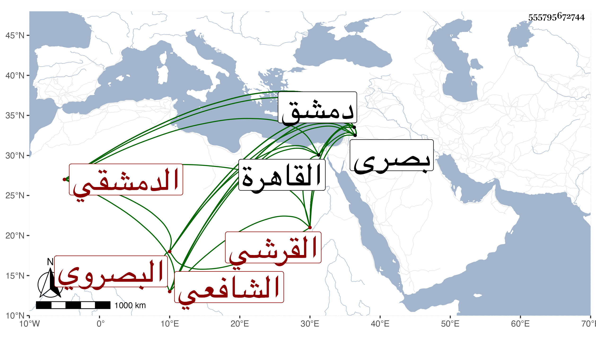

0902Sakhawi.DawLamic.ITO20230111-ara1.EIS1600.555795672744
Biography ID: 555795672744
763
محمد بن عبد الرحمن بن عمر بن عبد العزيز بن عمر بن عامر بن الخضر بن هلال بن علي بن محمد الشمس بن القاضي الزين بن الزين بن العز القرشي البصروي الدمشقي الشافعي ويعرف بالبصروي . ولد في المحرم سنة أربع وتسعين وسبعمائة ببصرى ونشأ بها فحفظ القرآن والمنهاج الفرعي والأصلي وألفية ابن ملك وعرضها على أبيه . ثم تحول لدمشق سنة ثمان عشرة بعد ما تنبه فأخذ النحو عن العلاء القابوني وكذا أخذ في الفرائض وغيرها عن الشهاب بن الهائم وحضر عند البدر بن قاضي إذرعات ولازم البرهان بن خطيب عذراء فقيه دمشق لأخذ الفقه فتكلم معه في أول مجلس قال فلما قمت قال لي أنت فقيه جيد وجعل كل وقت يزيد إعجابه بي قال وقد كان وقع في نفسي قبل انتقالي لدمشق أنه لا يمضي على سنتان حتى يؤذن لي بالإفتاء فكان كذلك أذن لي البرهان به في سنة عشرين وأفتيت في حياته وأقرأت بإذنه في الجامع الأموي والجماعة متوافرون بل كان ربما يحمل إلى الفتيا وأنا بشباك التربة التي كنت نازلا بها وهي بجانب منزله بخط دار الطعم ويقول لي انظر في هذه وقرأت البخاري على الجمال بن الشرائحي في السنة التي قدمت فيها . وقال لي يا سيدي الشيخ إنك لتحفظ في البخاري حفظا عظيما بل كان يسألني عن أشياء في الفقه ومررت يوما وإنه معه على شيخي البرهان فسأله البرهان عني فقال إنه نجيب أو معنى هذا ، ولم أحضر عند أحد من أشياخ الشافعية في عصره لعلمي أنهم دونه في الفقه وكنت على مذهب الفقهاء يعني غالبا في حب الرياسة والتقدم على الأقران والمنافسة في المكان إلى أن ادركني الله بلطفه فأذهب ذلك عني وأنشدت جوابا لمن قال لي لم لا تنافس كأصحابك في المجالس :
| قد كنت أرغب فيما فيه قد رغبوا | واليوم أرغب عنه رهبة النار |
| إني رأيت أمورا خطبها خطر | إن لم يلم بنا عفو من النار |
قال ورأيت بعد قدومي دمشق بسنين نسخة بمختصر ابن الحاجب الأصلي عليها عرض عم والدي له على التقي السبكي فوقع في نفسي أن هذا الكتاب لا يحفظه إلا فحول الرجال فحفظته قال البقاعي ولازال يقرأ ويدأب ويشمر عن ساق الجد حيث يجر غيره ذيل العجب ويسحب إلى أن وصف بحفظ مسائل الرافعي والتقدم في معرفة المذهب وإنشاء النثر المتين والنظم الرصين وجمع من ذلك كراريس بعد أن كان هذا الفن بدمشق قد درست رسومه وطمست أعلامه وعلومه ولذا ربما أنكر عليه ارتكابه وتفقره وتطلابه ... لأن من جهل شيئا عاداه ومن باعده أمر أنكره وجفاه . ومن نظمه :
| قومي قريش هم المعروف شأنهم | وفضلهم فذاك في أفضل الكتب |
| لا تستطاع مجاراة مكارمهم | ولا لحاقهم في القول والنسب |
| فكيف ينكر فضلي من له نظر | أم كيف يجهل ما أبدى من الأدب |
وبالجملة فكان علامة ناظما ناثرا تصدى للإقراء فانتفع به ومن أخذ عنه الولوي ابن قاضي عجلون ، وكان شيخه البرهان علق على المنهاج الفرعي شرحا حافلا مات عنه وهو في المسودة ولم يسمه ولا عمل له خطبة فانتدب لتبييضه مراجعا أصوله وتعب في ذلك جدا خصوصا وقد زاد عليه زيادات مهمة وحرر ما حصل السهو فيه بحيث جاء في ثمانية أسفار كبار وعمل له خطبة وسماه ، وهو من أقران التاج محمد بن بهادر الماضي ولكنه عمر حتى مات في أواخر سنة إحدى وسبعين في منزله من العنابة بدمشق وكان قد دخل القاهرة في رمضان سنة خمس وأربعين رحمه الله وإيانا .
